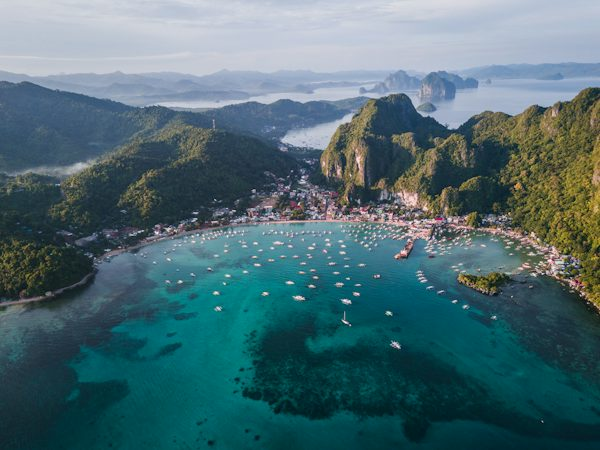

Palawan
₹ 1,89,000 / person
Philippines
Consistently crowned among the most magnificent tropical islands on Earth, Palawan is an emerald paradise of karst limestone towers.
Its jade-green lagoons, underground rivers, and vibrant coral gardens create an untouched marine wilderness.
Adventure
- Cruising through the UNESCO Puerto Princesa Subterranean River National Park, one of the New 7 Wonders of Nature
- Private traditional bangka outrigger boat island hopping between the crystal-clear waters of Big Lagoon, Small Lagoon, and Secret Beach in El Nido
- World-class wreck diving in Coron Bay across preserved WWII Japanese naval supply fleets sunk in 1944
- Swimming in Kayangan Lake in Coron, scientifically verified as one of the cleanest and clearest inland bodies of water in Asia
- Sea kayaking along towering black limestone cliffs and drift-snorkeling over untouched giant clam sanctuaries in Bacuit Bay
Cuisine
- Kinilaw na Tanigue: fresh Spanish mackerel ceviche cured in native calamansi juice, coconut vinegar, ginger, red chilies, and coconut cream
- Palawan Crocodile Sisig: a regional specialty of tender farmed crocodile meat sizzling with onions, calamansi, and chili
- Tamilok (Woodworm delicacy): harvested from coastal mangrove wood, prepared raw with vinegar, crushed chili, and diced onions
- Grilled Stuffed Squid: fresh offshore squid stuffed with ripe tomatoes, sweet onions, and grilled over charcoal with sweet soy glaze
- Sweet green mango with spicy bagoong shrimp paste, halo-halo shaved ice desserts, and fresh coconut water
Facts
- The Puerto Princesa Underground River is an 8.2-kilometer navigable subterranean river running directly into the sea through an enormous cave chamber
- Coron Bay is internationally celebrated for WWII Japanese naval shipwrecks sunk in a surprise US Navy air raid on September 24, 1944
- Known as the 'Last Ecological Frontier of the Philippines', retaining over 50% of its virgin rainforest and rich mangrove cover
- The Tabon Caves in southern Palawan revealed human fossil remains dating back over 47,000 years, dubbed the 'Cradle of Philippine Civilization'
- The discovery of the legendary 'Pearl of Lao Tzu' (Pearl of Allah), one of the largest natural non-nacreous pearls ever found, occurred off Palawan's shores
- Geologically separated from the Philippine volcanic arc; Palawan is actually part of the ancient Sunda continental shelf connected to Borneo